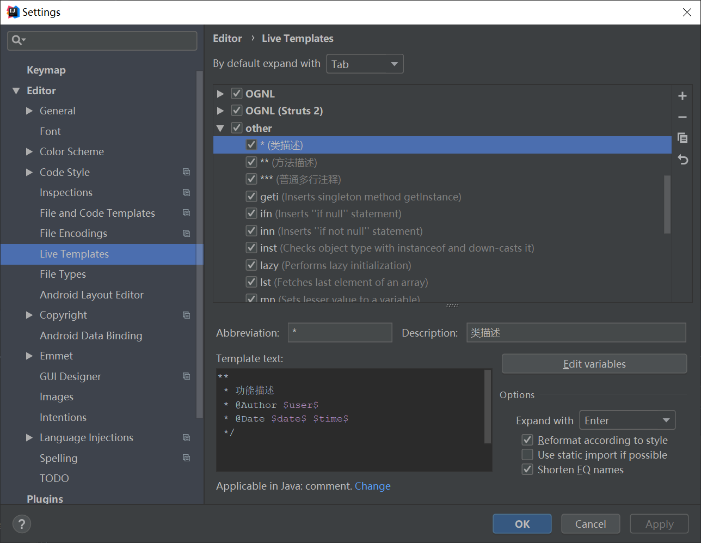
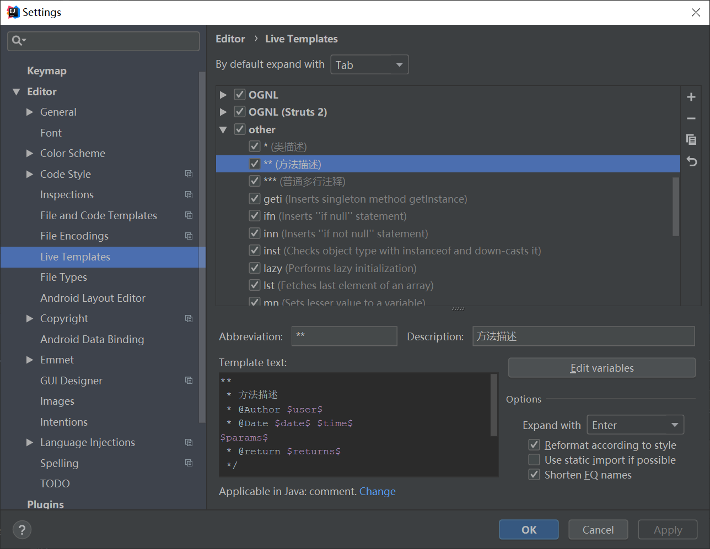
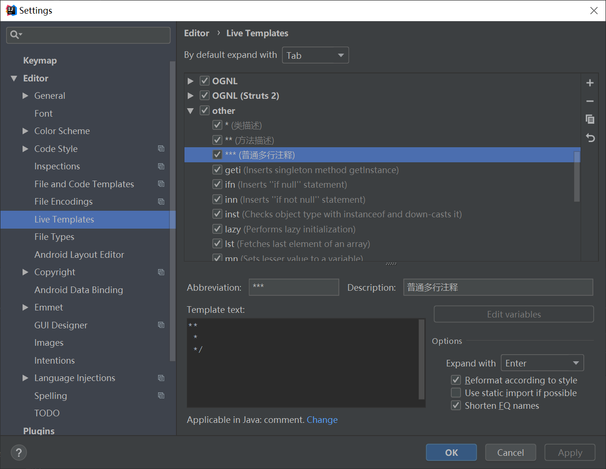
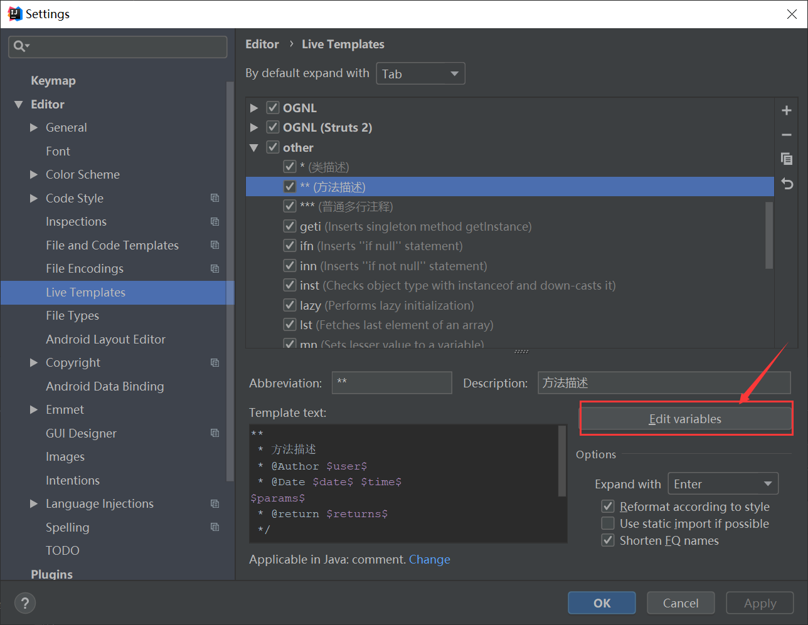
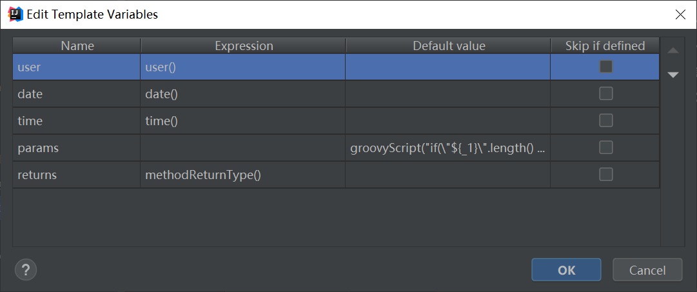
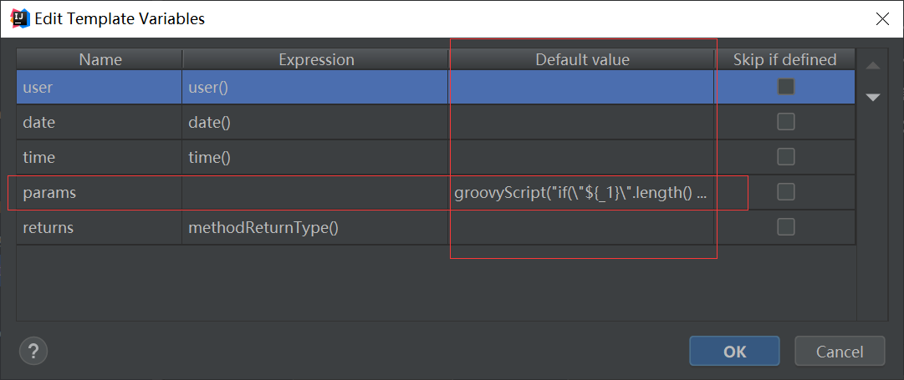

设置注释模板
类注释模板如下：

类注释格式如下：
**
* 功能描述
* @author $user$
* @createTime $date$ $time$
*/
方法注释模板如下：

方法注释格式如下：
**
* 方法描述
* @author $user$
* @createTime $date$ $time$
$params$
* @return $returns$
*/
通过多行模板如下：

通过多行注释格式如下：
**
*
*/
模板中带有参数的设置方法
1、选中上面定义的模板，点击该按钮

2、进入参数设置界面

3、除“params”参数以外，其它的参数都设置内置的方法即可，params参数的取值设置需要一段groovy脚本，放入“default value”列，注意不要放错哟。

groovy脚本如下：
groovyScript("if(\"${_1}\".length() == 2) {return '';} else {def result=''; def params=\"${_1}\".replaceAll('[\\\\[|\\\\]|\\\\s]', '').split(',').toList();for(i = 0; i < params.size(); i++) {if(i==0){result+='* @param ' + params[i] + ' '}else{result+='\\n' + ' * @param ' + params[i] + ' '}}; return result;}", methodParameters());